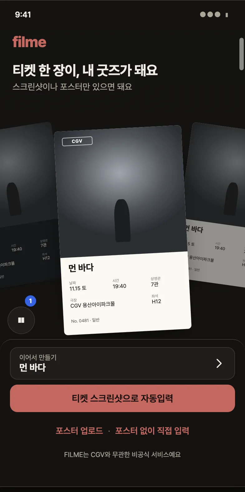
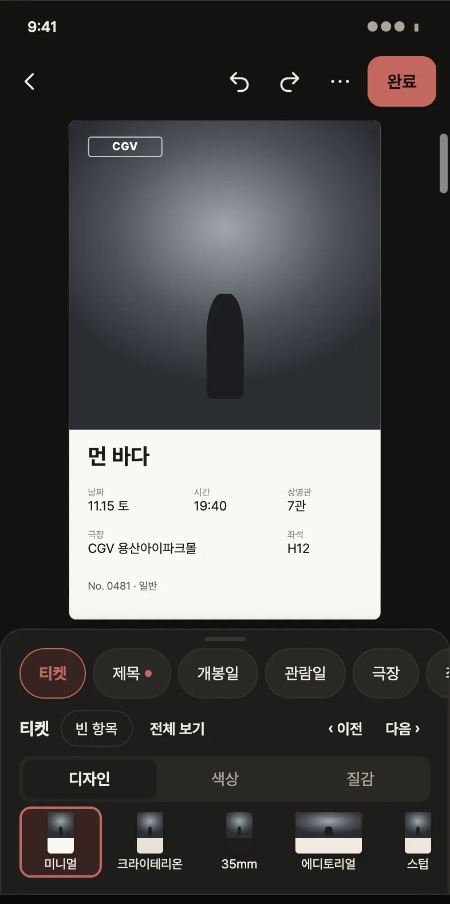
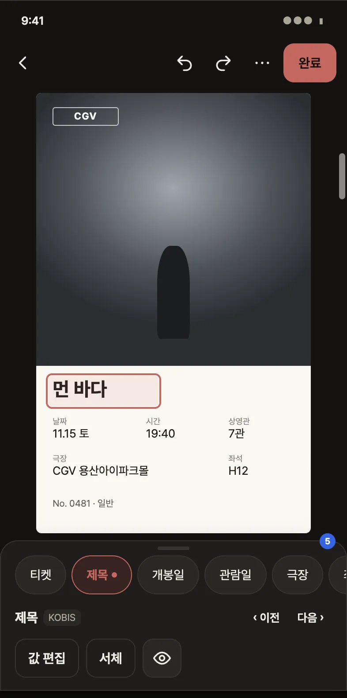
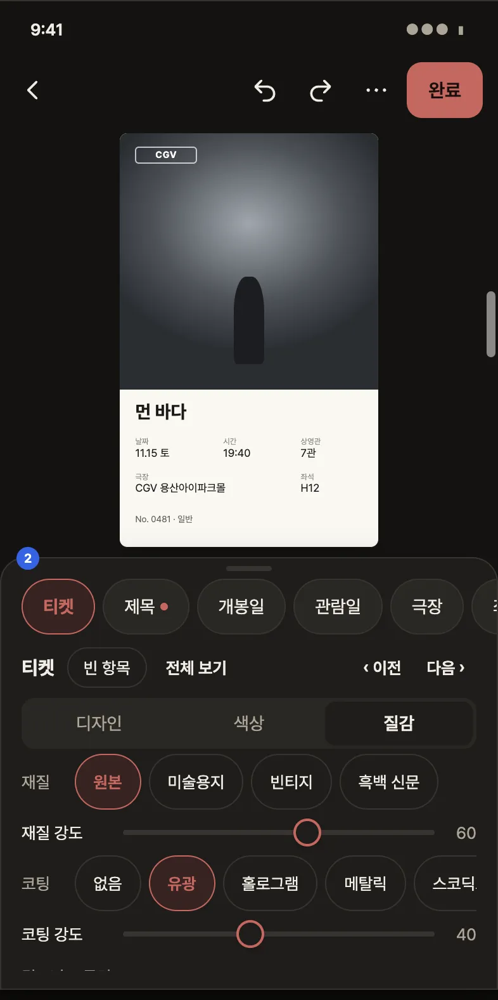
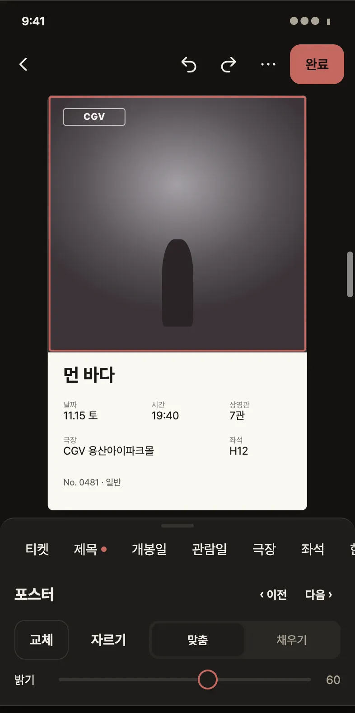
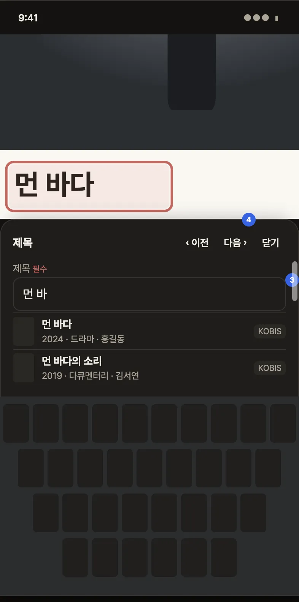
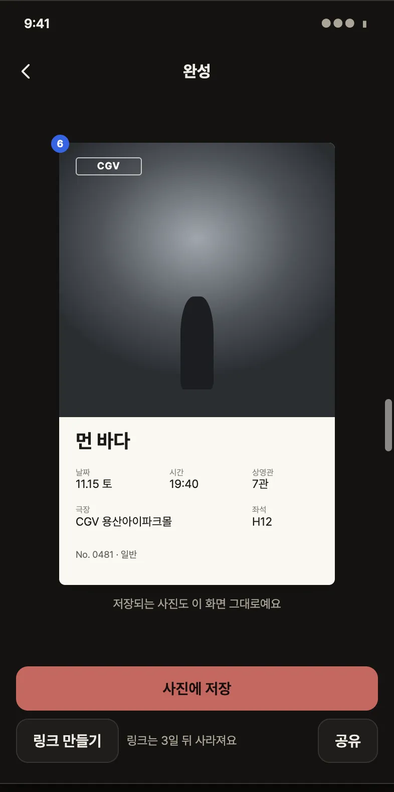

F 디벨롭 — 영사실
F의 구조(떠 있는 툴바 없음, 대상 줄 + 하단 문맥 패널 하나, 접힘/펼침)는 그대로 두고 시각 언어만 다시 정했어요. 촌스럽게 보인 원인은 다섯 가지였어요. pill과 둥근 박스 남발(999px 칩, 10·12·14·16px 반경이 한 화면에 섞임), 같은 무게의 버튼 나열(이전·다음·빈 항목·전체 보기가 같은 굵기와 색), 시스템 고딕 한 벌의 위계(번호·값·메타·제목이 같은 서체라 숫자가 흔들림), 그림자와 썸 그림자로 낸 깊이, 표면 색 구분 없이 연분홍 채움 하나로 선택·필수·주 행동을 다 표시한 것이에요. 영사실 톤에서는 무대(stage)는 어둡고 티켓만 빛나요. 깊이는 표면 세 단계와 헤어라인으로, 숫자·위치·사양은 JetBrains Mono 고정폭으로, 브릭은 주 행동 하나와 선택 표시에만 써요. 모서리는 6(조작부)과 14(시트) 두 단계뿐이에요.
디자인 시스템
이 페이지의 화면은 아래 토큰(--pr-)만 써요. 라이트·다크는 base.css와 같은 규칙(시스템 설정 + 테마 토글)으로 바뀌어요.
색
다크 · 무대
라이트 · 종이와 잉크
대비: 다크 ink 15.2 · ink-2 7.4 · ink-3 4.3(surface-1 위), 라이트 ink 16.9 · ink-2 6.5 · ink-3 4.3. 브릭은 채움 위 흰 글자 4.8(다크)·5.7(라이트)이고, 다크 표면 위 글자로는 3.8이라 선·면에만 써요.
글꼴과 타입 스케일
| label-mono | 01 TITLE REQ11/16 · +0.08em · 500 · 대문자 · JetBrains Mono | 11/16 · +0.08em · 500 · 대문자 · JetBrains Mono |
| meta-mono | 11/16 · +0.02em · 400 · 고정폭 숫자 · JetBrains Mono | 11/16 · +0.02em · 400 · 고정폭 숫자 · JetBrains Mono |
| caption | 링크는 3일 뒤 사라져요12/16 · 400 · Pretendard | 12/16 · 400 · Pretendard |
| body-s | 재질 강도13/20 · 400 · Pretendard | 13/20 · 400 · Pretendard |
| body | 포스터 없이 직접 입력15/22 · 400/500 · Pretendard | 15/22 · 400/500 · Pretendard |
| input | 먼 바다16/24 · 400 · 입력 전용(iOS 확대 방지) | 16/24 · 400 · 입력 전용(iOS 확대 방지) |
| title | 제목17/24 · −0.01em · 600 · Pretendard | 17/24 · −0.01em · 600 · Pretendard |
| headline | 티켓 한 장이, 내 굿즈가 돼요24/30 · −0.02em · 600 · Pretendard | 24/30 · −0.02em · 600 · Pretendard |
| display | filme28/32 · −0.01em · 400 정자 · Instrument Serif(워드마크만) | 28/32 · −0.01em · 400 정자 · Instrument Serif(워드마크만) |
굵기는 400·500·600만. 폴백: Pretendard → Apple SD Gothic Neo → Noto Sans KR, JetBrains Mono → SF Mono·Menlo(한글은 Pretendard로), Instrument Serif → Iowan Old Style·Georgia.
간격 · 4px 기반
프레임 좌우 16, 컴포넌트 안 패딩도 이 값만 써요.
그리드 · 4열 · 거터 8 · 여백 16
열 폭 393 → 84.25px, 375 → 79.75px. 위 "그리드" 버튼으로 모든 화면에 겹쳐 볼 수 있어요.
모서리 · 선 · 깊이 · 모션
- 6 조작부 · 14 시트
- 헤어라인 1px · 인디케이터 2px
- 그림자는 티켓 한 장만. 층은 stage → surface-1 → surface-2 + 헤어라인
- 쓰지 않아요(스위치 트랙만 예외)
핵심 컴포넌트
화면 전후 비교
왼쪽은 지금의 F(다크 393 캡처), 오른쪽은 영사실 톤이에요. 오른쪽 화면의 회색 사각 태그는 아래 변경점 번호이고, 파란 숫자 핀은 F와 같은 #826 요구 번호예요.
1. 랜딩

티켓 한 장이, 내 굿즈가 돼요
스크린샷이나 포스터만 있으면 돼요
FILME는 CGV와 무관한 비공식 서비스예요
- 워드마크만 세리프 filme 워드마크를 Instrument Serif 28/32 정자로 두고, 한 줄 카피는 Pretendard 24/30 600으로 써요. Instrument Serif에는 한글 글리프가 없어서 카피에 걸면 기기마다 다른 시스템 서체로 떨어져요.
- 그림자·회전 대신 무대 면 기울인 티켓과 그림자, 위쪽 그라데이션 스크림을 걷고, 가운데에 surface-1 단색 기둥(양옆 헤어라인)을 세워 조명 받은 무대처럼 보여요. 곁 티켓은 불투명도 0.32로 어둠 속에 둬요.
- 전시 위치를 mono로 정지 버튼(각진 6px, 헤어라인) 옆에 01 / 03 위치를 붙여 지금 몇 번째 전시인지 보여요.
- 하단 패널 위계 셋 이어서 만들기는 헤어라인 행 + mono 날짜, 주 행동 하나만 브릭으로 채우고, 링크 쌍은 밑줄 텍스트, 고지는 ink-2 12px로 읽히게 올렸어요.
2. 편집 기본

- 상단 줄 아이콘은 ink-2 20px 선 굵기 1.75로 가볍게, 완료만 브릭으로 채워요. 화면당 채운 버튼은 하나예요.
- 티켓 여백 티켓 위 24px·아래 16px를 비워 숨 쉴 자리를 주고, 그림자는 티켓 한 장에만 남겨요.
- 대상 칩 → 슬레이트 인덱스 mono 번호 + 이름 텍스트 탭으로 바꾸고 선택은 2px 브릭 인디케이터로만 표시해요. 필수 미입력은 점 대신 REQ 태그예요.
- 패널 머리 대상 이름(title 17/24 600) 옆에 mono 위치 01 / 12, 오른쪽 조작은 텍스트 버튼으로 무게를 낮췄어요.
- 세그먼트 → 밑줄 탭 채운 세그먼트 대신 헤어라인 위 2px 잉크 밑줄. 대상 인덱스(브릭)와 색으로 위계가 갈려요.
- 무드 썸네일 라벨은 mono 대문자, 선택은 둥근 테두리 대신 재단 표시로 표시해요. 화면 읽기 이름은 한글 그대로예요.
- 핸들 둥근 알약 핸들을 32×2 헤어라인 막대로 바꿨어요.
3. 필드 선택

- 선택 표시 = 재단 표시 둥근 채움 박스 대신 네 모서리 L자 + 45% 헤어라인 상자, 박스 바깥 위에 TITLE 라벨. 오버레이는 티켓 DOM 밖 형제 노드라 저장물에 섞이지 않아요(요구 6).
- 머리의 출처와 이동 KOBIS 출처는 mono 헤어라인 태그, 이전·다음은 텍스트 버튼에서 44px 아이콘 버튼으로 바꾸고 위치 02 / 12를 붙였어요.
- 조작 위계 세 단계 값 편집(보조, 헤어라인 테두리) · 서체(텍스트) · 표시(아이콘). 같은 무게 버튼을 나열하지 않아요.
4. 티켓 대상 · 펼침

컴포넌트 투명도
- 옵션 pill → 각진 선택 상자 재질·코팅 옵션은 선택된 것만 surface-2 면 + 헤어라인 6px 상자예요. 연분홍 채움을 없앴어요.
- 슬라이더 2px 트랙 + 잉크 채움 + 10×20 각진 thumb, 값은 mono 오른쪽 정렬. 입력 높이 32px(track32)는 그대로예요.
- 구획은 헤어라인 컴포넌트 투명도 묶음 앞에 헤어라인 한 줄만 그어요. 카드나 배경 면을 덧대지 않아요.
5. 포스터 대상

- 포스터 선택 재단 표시가 티켓 가장자리 밖으로 나가 포스터 영역 전체를 가리켜요. POSTER 라벨은 티켓 위 여백에 놓여 글자를 가리지 않아요. 대상 줄은 고른 대상(09 포스터)이 보이도록 스스로 스크롤해요.
- 맞춤/채우기 세그먼트 대신 펼침 화면과 같은 선택 상자 옵션으로 맞췄어요. 교체(보조) · 자르기(텍스트) 위계는 필드 선택과 같아요.
6. 필드 편집 · 키보드

- 먼 바다2024 · 드라마 · 홍길동
- 먼 바다의 소리2019 · 다큐멘터리 · 김서연
- mono 필드 경로 머리 위에 영화 / 제목 경로를 mono로, 필수는 REQ 태그로 보여요.
- 입력 필드 surface-2 면 + 헤어라인 6px, 포커스는 브릭 2px 테두리. 글자는 16px 그대로예요(요구 3).
- KOBIS 결과 연도·장르·감독을 mono 한 줄로 정렬하고, 머리 오른쪽에 결과 개수를 붙였어요.
7. 결과

1960 × 3108 · JPEG
저장되는 사진도 이 화면 그대로예요
- 무대 위 저장물 랜딩과 같은 단색 무대 기둥 위에 티켓을 세우고, 아래에 저장 사양 1960 × 3108 · JPEG를 mono로 적어요.
- 주 행동 하나 + 텍스트 행 사진에 저장만 브릭으로 채우고, 링크 만들기·공유는 밑줄 텍스트 버튼 한 줄로 내렸어요.
제안 · 결정이 필요한 것
- 다크를 기본 인상으로 고정할지지금은 시스템 설정을 따르고 라이트도 같은 수준으로 완성했어요. 편집기를 다크로 고정하면 티켓이 가장 돋보이지만, 밝은 곳에서 라이트를 고른 사용자의 설정을 무시하게 돼요. 시스템 따름을 유지하고 소개 이미지만 다크로 찍는 쪽을 제안해요.
- mono 라벨을 어디까지 쓸지번호(01)·위치(02 / 12)·값(60)·사양(1960 × 3108)·출처(KOBIS)·필수(REQ)까지만 썼어요. 무드 썸네일 이름(MINIMAL 등)은 영문 대문자라 한국어 사용자에게 낯설 수 있어요. 한글 이름을 body-s로 두고 mono는 번호에만 남기는 안이 대안이에요.
- 선택 표시를 재단 표시로 바꿀지모서리 L자만으로는 작은 필드에서 약해서 45% 헤어라인 상자를 같이 그렸어요. 바깥 라벨(TITLE)은 티켓 위쪽 여백이 24px 이상일 때만 안전해서, 그보다 좁은 배치에선 라벨을 박스 안쪽 아래로 옮기는 규칙이 필요해요.
- 세리프를 워드마크에만 둘지Instrument Serif에 한글이 없어서 랜딩 카피는 Pretendard로 썼어요. 카피까지 세리프로 가려면 한글 세리프 웹폰트를 하나 더 들여야 하고, 용량과 BI 마스터(Wordmark.tsx)와의 정합을 같이 정해야 해요. 이탤릭은 제목 위계에서 흔한 AI 티라 정자로 뒀어요.
- 브릭의 쓰임 범위다크 표면 위 브릭 글자는 3.8:1이라 글자색으로 쓰지 않고 채움·인디케이터·재단 표시에만 썼어요. 필수(REQ)도 브릭이 아니라 잉크 태그예요. 경고색을 따로 둘지는 오류 상태 화면을 그릴 때 정하는 게 좋아요.
요구 수용·기능 보존은 F와 같아요 → f-canvas-panel.html